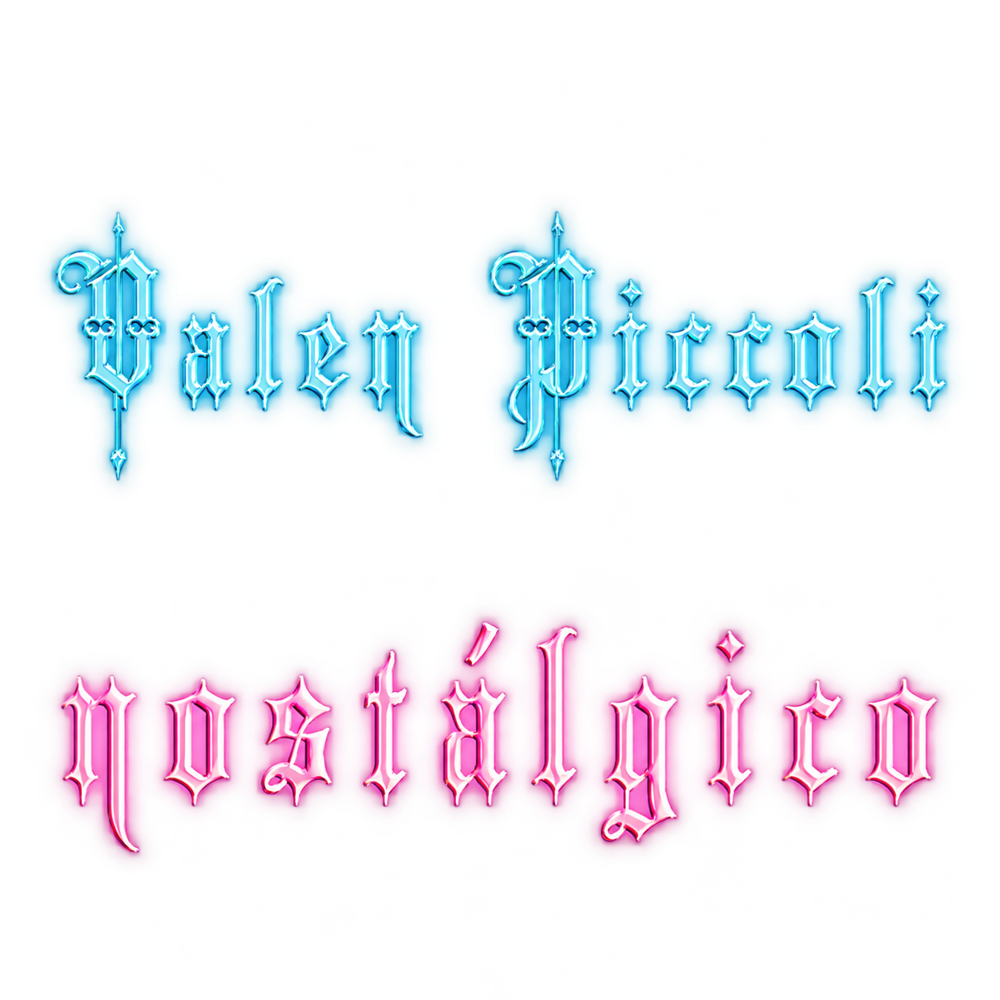

Ir al contenido

Videos
En vivo
EPK ↗
Valen Piccoli · Álbum · 2023
Escuchar el álbum
Ver videos
23
Escuchar
NOSTÁLGICO
completo
Abrir en Spotify ↗
Videos musicales
Videos
oficiales
NOSTÁLGICO
Video musical
CIEN MIL A CERO
Video musical
¿QUÉ PASÓ?
AI Music Video
Presentaciones
Versiones
en vivo
¿QUÉ PASÓ?
Versión en vivo
EL SOL
Versión en vivo